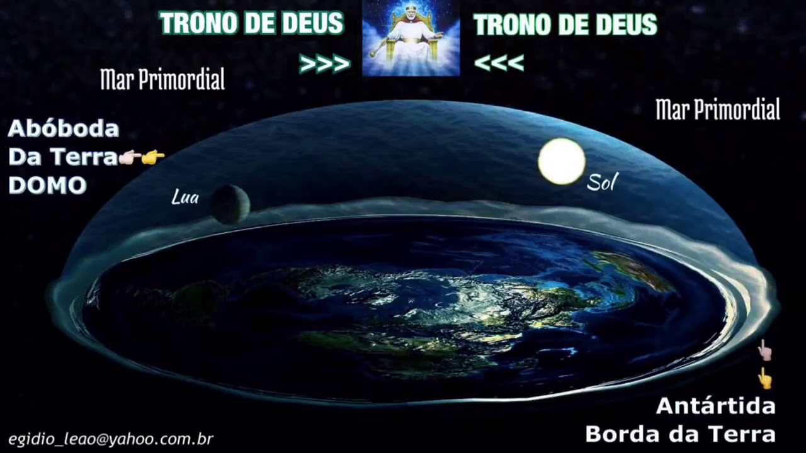
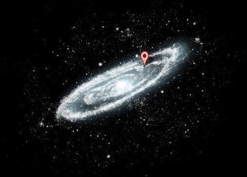

Bem, há vários motivos, vendo que é um tremendo esforço manipular todas essas informações, a primeira hipótese, seria para se vangloriar de ter ganhado a corrida espacial contra os comunistas e reforçar o sistema capitalista como único universal, tendo mais influência a cada dia que passa; há também quem diga que há mais ua conspiração com as vias aéreas, apenas com finalidade lucrativa capitalista das mesmas, já que poderiam fazer viagens com paradas desnecessárias, mas que fariam total sentido na Terra esférica, podendo cobrar uma taxa maior do consumidor.
Todas as teorias existentes apontam para o mesmo ponto, controle populacional, tendo grande influência da Nasa e dos Estados Unidos da América, já que poucas nações tem o investimento ou tecnologia para fazer essas missões.
De acordo com o criacionismo cristão, a Terra é e sempre foi plana, isso pode-se comprovar nos seguintes versos:

Apocalipse 7:1 -
E depois destas coisas vi quatro anjos de pé nos quatro cantos da terra, segurando os quatro ventos da terra, para que o vento não soprasse na terra, nem no mar, nem em qualquer árvore.
Mateus 4:8-9 -
Novamente o transportou o diabo a um monte muito alto; e mostrou-lhe todos os reinos do mundo, e a glória deles.
E disse-lhe: Tudo isto te darei se, prostrado, me adorares.
Amós 9:6 -
Ele é o que edifica as suas câmaras superiores no céu, e fundou na Terra a Sua abóbada, e o que chama as águas do mar, e as derrama sobre a Terra; o Senhor é o Seu nome
Além de provas divinas, podemos fazer uso das ferramentas atuais para nos fazer questionar do formato geoide do planeta, mesmo q há muito tempo já tenha sido comprovada a Terra plana.
Um belo exemplo teórico é o Sol, há 150 milhões de quilômetros diante nosso planeta, e ainda pode ser visto como uma estrela gigantesca, mesmo a um olho nu preso na atmosfera, como se não bastasse, mesmo em filmagens caseiras, o Sol é visto de um ângulo de baixo, o que é explicado na hipótese da Terra plana, ja que nossa estrela viaja em movimentos circulares acima da Terra, a orbitando, fato que também comprova a visão da lua juntamente com o Sol no horizonte em algumas partes do dia, dependendo de sua posição geográfica.
Outro ponto questionável são os trabalhos de engenheiros, em que nunca necessitam ou cogitam levar em consideração a suposta curvatura da Terra, nem mesmo em construções que atravessam muito quilometros de mar aberto, como a Ponte de Danyang-Kunshan, na China, com seus incríveis 164 km de extensão; ou a rota ferroviária Moscou-Vladivostok, Russian Railways, de 9.259 km de extensão, entre Moscou e Vladivostok, nenhum motor atual ja fabricado seria capaz de circular em ambiente com o mínimo de desnivelamento, como aconteceria na Terra bola.
Um experimento no Século XIX,, por M.M Biot e Arago, conduziu que fosse colocada uma lâmpada extremamente potente no Desierto Las Palmas, essa lâmpada podia ser vista em todo o trajeto até Ibiza, onde a geografia era nivelada com a do deserto, a 160.9344km de distância, a luz a 2011.68 metros de altura, deveria estar a baixo da linha do horizonte, o que não foi presenciado, obviamente que este experimento faz o total sentido em uma superfície plana. Esse não é o único exemplo que mostra problemas com a linha do horizonte, a Estátua da Liberdade por exemplo, está a 99 metros acima do nível do mar, e pode ser vista, em um dia claro, a 96.5 quilômetros de distância, mesmo com uma curvatura de 0.6 quilômetros.
 Ainda segundo a Nasa, a Terra gira a 1,700.000km por hora ao redor do Sol, que viaja a 777 mil de km/h, enquanto orbitamos a Via Láctea a 871.781 por hora, enquanto a mesma viaja pelo universo a 1.078.260.480 km/h, originários do Big Bang há 14 bilhões de anos atrás.